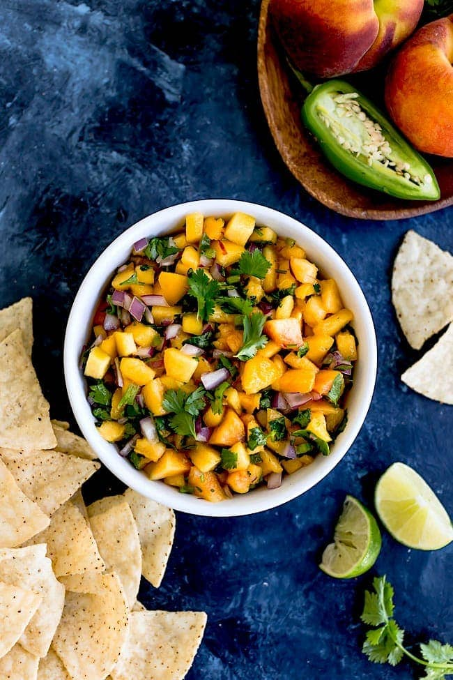

Peach Salsa

A mix of differents flavors in your mouth
This is the perfect snack if you have a sweet tooth but you also like spicy food. Enjoy the sweet taste of the peach and wake up with the spicy kick of the jalapenos.
Ingredients
- 2 large fresh peaches - peeled, pitted, and chopped
- 1 tomato, chopped
- 1/2 jalapeno pepper, finely chopped, or more to taste
- 1 clove garlic, diced
- 1 tablespoon diced yellow onion
Steps
- Mix together peaches, tomato, lime juice, jalapeno pepper, garlic, and onion in a bowl.